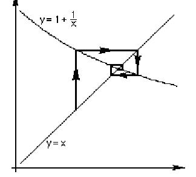

Spiralling in on the intersection of 2 graphs
|
Method 11:
Bill Walton when at Webster (in the '60's) had used this method. Then
David Fielker from |
 |
One of the nice things is that all these iterative methods, which are eminently suited for calculators or computers, can be used for practically any type of equation, and I always resented the formula for quadratics, which never generalized to anything else. Some of the iterations have a lovely effect on the calculator. As you press the same sequence of keys again and again, more and more rapidly as you get used to them, you really get the FEEL what iteration is!"
Try this yourself. Start with the example shown above with x = 1.1 and y = 1.1 . You might even write a program to do this, which I have not been able to do yet. Ian did a version on Mathematica.